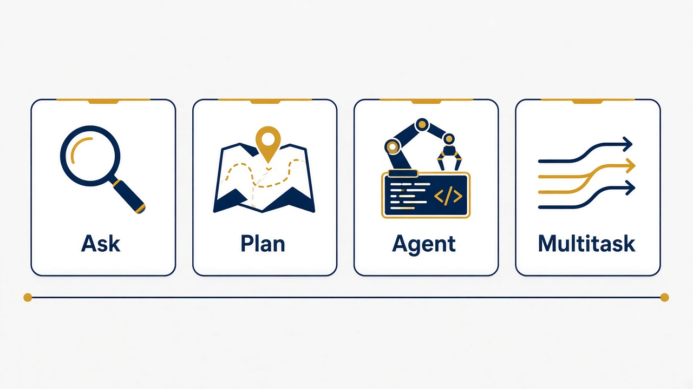
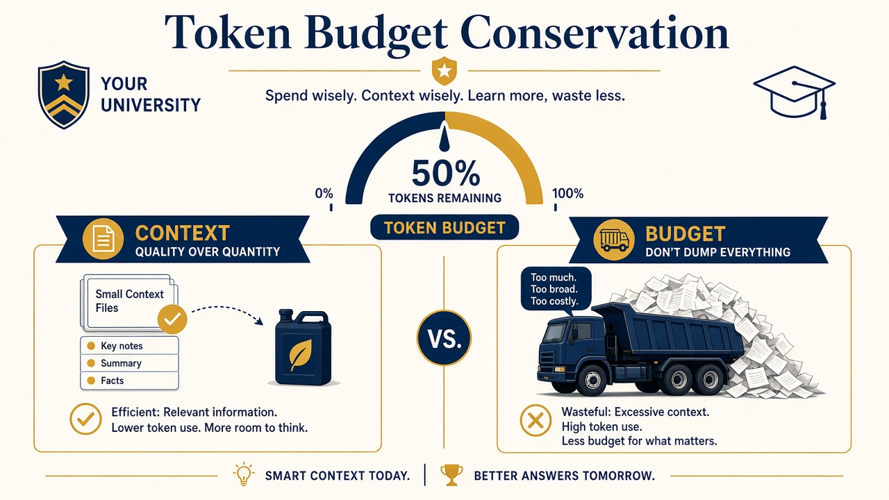
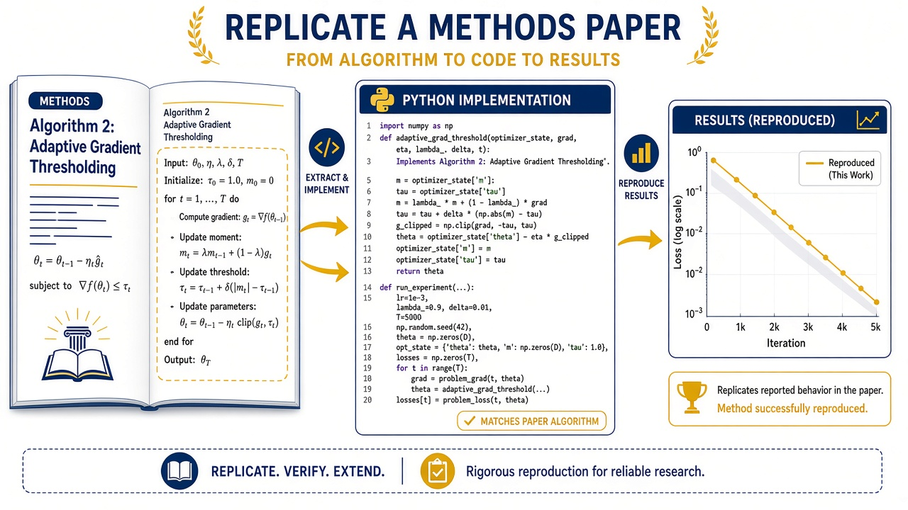
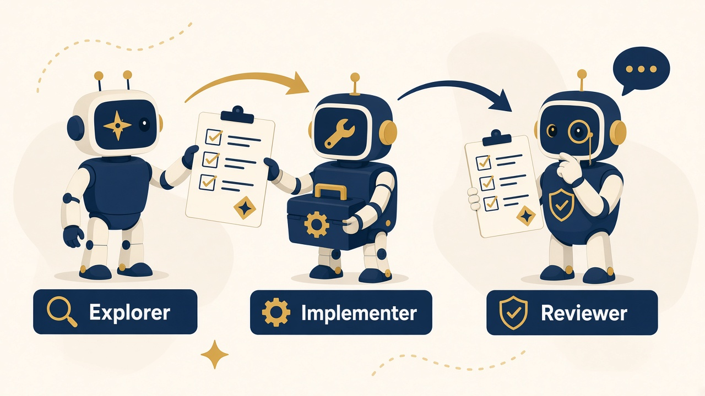
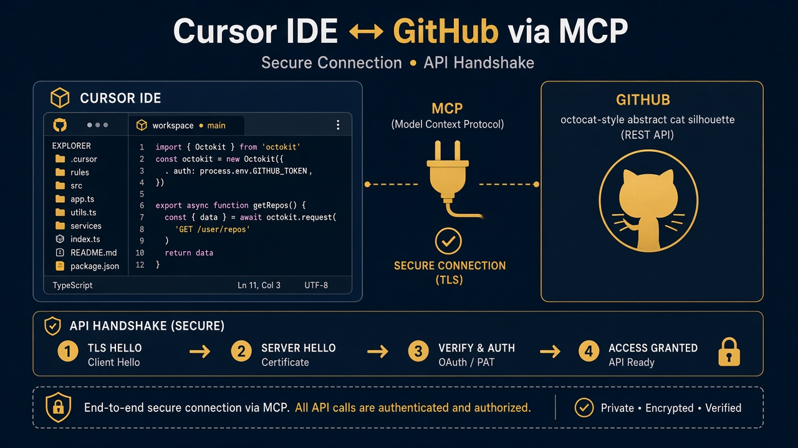

Queen's University Centre for Advanced Computing
Cursor for Research Computing
From Laptop to CAC HPC. Three hours of hands-on practice so you can use an AI coding agent without abandoning scientific judgment, file hygiene, or your SLURM checklist.
Shadi Khalifa, PhD <khalifa.s@queensu.ca>
Centre for Advanced Computing, Queen's University
Cursor the company
Anysphere builds Cursor
Cursor is the product of Anysphere, a company focused on AI-native software development tools rather than a generic chatbot bolted onto a text box. The company ships an editor that treats large language models as first-class collaborators inside your project files, terminals, and (when you allow it) external tools.
You should care about the vendor story only insofar as it explains the product shape: Cursor is not a separate chat website you paste code into. It is a fork of a familiar VS Code-style IDE with deep hooks for agents, rules, skills, and Model Context Protocol servers.
Cursor the tool
An IDE with an agent, not a chat window with an afterthought editor
When you open Cursor you get the editor habits you already know (tabs, git, terminals, extensions) plus a chat and agent panel that can read your workspace, propose diffs, run commands you approve, and follow project rules you define.
For research computing that combination matters because your work lives in repositories, notebooks-adjacent scripts, SLURM templates, and lab conventions. An agent that can see those files in place is far more useful than one that only sees the last paste you remembered to include.
Why researchers care
Speed with a seatbelt
You already write analysis code, chase obscure traceback lines, draft job scripts, and translate methods sections into runnable steps. Cursor can accelerate the boring middle of that work: explaining a neighbor's pipeline, drafting argparse, turning a checklist into an sbatch template, or comparing a log against a broken script.
What it cannot do is replace your judgment about data sensitivity, cluster etiquette, or whether a bootstrap CI actually matches Algorithm 1. This workshop trains the seatbelt habits so the speed does not become an expensive accident.
Workshop description
What you will do this afternoon
You will work through eight use cases, from Privacy Mode and chat hygiene through a GitHub MCP demo, using the synthetic workshop repository rather than your restricted research data. Each block combines a short concept explanation with prompts you copy into Cursor and concrete "done when" checks so you know you finished for real.
If CAC SSH is available you may sync the SLURM exercise and practice remote paths; if not, careful local dry-runs still count. The point is reproducible control: Ask before Agent, attach the few files you need, keep rules in the project, and never invent module names or accounts.
Workshop description
Where your materials live
Hands-on work lives under exercises/ for each use case, with shared templates under config/.cursor for rules and skills. Keep handouts/budget-card.md and handouts/privacy-and-context.md nearby; they are the one-page habits cards for privacy, context, and spend.
You will not need a separate prompts folder. Every prompt you should type appears on the slides in labeled boxes so you can copy it straight into Cursor while we talk through why it is phrased that way.
Do this first
Privacy Mode how-to
- Windows/Linux: press Ctrl+Shift+J. macOS: Cmd+Shift+J.
- Open General and turn Privacy Mode on before you paste anything research-shaped.
- If you are on a Teams or Enterprise seat, check whether an admin already enforces Privacy Mode so you are not fighting policy.
- Skim handouts/privacy-and-context.md and keep it open while you work.
Privacy Mode
What it protects, and what it does not
With Privacy Mode on for supported models, Cursor documents that your code is not used to train Cursor or the model providers. That is the main protection you are buying with the toggle, and it is worth flipping before habit takes over.
Prompts and code context still travel to the model provider so answers can be generated. This is not a fully local offline mode. It also does not authorize pasting restricted, clinical, or identifiable research data into chat. Some models need admin approval for provider retention, and bring-your-own-key setups follow the provider's own terms.
Objectives
What you should be able to do by the end
You should be able to choose Ask, Plan, Agent, or Multitask with intent, keep one research objective per chat, and ground answers in files you actually attach rather than in hopeful invention. You should also be able to place stable lab policy in Project rules and skills so you stop re-explaining SLURM hygiene in every conversation.
On the cluster side, you should leave able to draft a reviewable sbatch script from a checklist, diagnose a broken job from paired stdout/stderr, and decide when a dry-run is the honest stopping point for the day.
Outcomes
Artifacts you will have produced
By the end of the three hours you will have a grounded README for the literacy exercise, a local analysis script with a plot, practice with /goal and a capped /loop against a mock job status file, a methods replication with notes on fidelity limits, and SLURM scripts that keep account and partition as placeholders.
You will also have walked an Explorer-Implementer-Reviewer handoff and watched a read-then-approve GitHub MCP path. Those habits transfer to your own repos tomorrow morning.
Agenda - part 1
Morning path: UC0 Foundations through UC3 Skills
| Time | Use case |
|---|---|
| 0:00-0:30 | UC0 Foundations: Privacy Mode, chat context, modes, Projects, and tokenomics |
| 0:30-0:45 | UC1 Codebase literacy and documentation grounding |
| 0:45-1:00 | UC2 Local analysis pipeline |
| 1:00-1:10 | Break |
| 1:10-1:30 | UC3 Skills, /goal, and /loop |
Agenda - part 2
Afternoon path: UC4 Paper replication through UC7 GitHub MCP
| Time | Use case |
|---|---|
| 1:30-1:55 | UC4 Paper method replication |
| 1:55-2:25 | UC5 CAC remote work, SLURM jobs, and debugging |
| 2:25-2:30 | Break |
| 2:30-2:45 | UC6 Multi-agent orchestration |
| 2:45-3:00 | UC7 GitHub MCP demo |
Dry-run paths are first-class. Not everyone needs a live sbatch today.
Foundations: Privacy Mode, chat context, modes, Projects, and tokenomics
The vocabulary and safety habits everything else depends on.
What this use case is
UC0 Foundations: when you need this
You use UC0 Foundations whenever you open Cursor for research work: before you touch cluster scripts, before you attach a methods brief, and before you let an agent edit files. It is deliberately off-cluster and local so you can practice control without burning SLURM time.
What you will produce is a mental checklist (Privacy Mode on, mode chosen on purpose, context scoped, budget habits visible) plus a short scratch chat that shows you the cost difference between vague Agent prompts and tight Ask-then-Plan-then-Agent sequences. Keep handouts/budget-card.md beside your laptop.
Concept
Large language models in plain language
A large language model predicts likely next tokens given the text you and the tools provide. It is extraordinarily good at drafting, explaining, and transforming code-shaped text, and it is also cheerfully willing to invent module names, paper details, or cluster accounts that sound plausible.
Your job is to treat the model as a fast junior collaborator that must cite files, stay inside placeholders when reality is unknown, and accept "I do not know" as a valid answer. Scientific judgment stays with you.
Concept
What "agent" means here
In Cursor, an agent is not merely a chat reply. It is a loop that can read your workspace, propose edits, call tools you have enabled, and iterate toward a goal you stated. Ask mode mostly explains; Agent mode can change the tree.
That power is why mode choice is a budget and safety decision. You invite an agent into Agent mode when the goal is clear, the files are attached, and you are ready to review diffs. You stay in Ask when you are still mapping the territory.
Concept
RAG-style grounding without the buzzword fog
Retrieval-augmented generation, in workshop terms, means you point the model at the documents that should constrain the answer (lab conventions, checklists, paper briefs) instead of hoping the model remembers your lab's policy from the internet.
In Cursor you do that with @ file mentions, Project rules, and skills. When the model answers a conventions question, you should see quotes or clear pointers to the file it used. If it cannot find the policy, it should say so rather than invent one.
Concept
MCP: Model Context Protocol
MCP is a standard way for an agent to talk to external tools (issue trackers, browsers, databases) through servers you connect, with scopes you choose. Think of it as a careful USB port for tools rather than pasting API tokens into random prompts.
You will see MCP for real in UC7 GitHub MCP demo. Until then, remember the habit: start read-only, draft writes for human approval, and never grant a classroom demo the keys to a production lab org.
Concept
Projects: durable context for a research repo
A Project in Cursor is how you keep stable guidance next to the code: rules that always apply, skills the agent can load for recurring jobs like drafting SLURM scripts, and the habit of opening the right folder so indexing and @ mentions stay relevant.
Workshop templates live under config/.cursor. You will copy rules and skills into your project (or personal skills store) rather than retyping "do not invent CAC modules" into every chat.
Modes
Ask, Plan, Agent, Multitask
Ask is cheap reconnaissance and explanation. Plan outlines steps without editing. Agent implements with your review. Multitask runs parallel agents when scopes are disjoint and your budget allows.
Default order for research work: Ask, then Plan, then Agent. Multitask last.

Modes in practice
Pick the mode that matches the risk
Ask
Explain files, diagnose logs, extract methods. No edits. Lowest blast radius.
Plan
Name functions, packages, and verification steps before any diff appears.
Agent
Implement a plan you already agree with. Review every diff.
Multitask
Parallel agents on disjoint paths. Never two writers on one file.
Chat context
What belongs in the same chat
- One objective, short follow-ups, and @ only the files you need for that objective.
- Ask then Agent is fine when the goal has not changed and the plan is still visible.
- Stable policy should live in rules and skills, not as a novel you re-paste each morning.
- Keep restricted or clinical data out of workshop and public threads entirely.
Chat context
What does not belong in the same chat
- Unrelated topic hopping (README polish morphing into paper replication mid-thread).
- Re-pasting huge SLURM logs when a tail or grep summary would do.
- Scope creep after you already said "done".
- Leaving /loop running while you start another expensive task.
When context is full
Quality slips before the UI looks dramatic
Chat context is finite: prior turns, attachments, rules, tool output, and replies all compete for space. When it fills, older turns may drop or compact. Answers get vaguer, contradict earlier decisions, or re-ask questions you already settled, while cost often stays high.
The fix is boring and effective: open a new chat, paste a three-line handoff, and @ the key files (or a short HANDOFF.md). Put durable policy in rules so you are not rebuilding the lab every session.
Tokenomics
Included usage vs on-demand
Your plan includes a monthly usage pool. On-demand usage is pay-as-you-go after that pool, billed for what you used, not a prepaid token pack you buy in advance.
Check the dashboard. On Teams, someone should set spending limits before a lab discovers curiosity is expensive.

Budget habits
Twelve habits from the budget card
- Privacy Mode first; still no restricted data in prompts.
- Ask → Plan → Agent → Multitask. Attach few files. One goal per chat.
- Smaller/faster models for explain; stronger models for hard bugs or method fidelity.
- Cap /loop. One write-scope per agent. MCP: draft, then you click send.
UC0 Foundations - hands-on
Prompt A - Ask mode reconnaissance
Copy into Cursor (Ask mode)
In Ask mode: In two short paragraphs, explain what files exist under exercises/uc1-codebase-literacy and what problem they seem to solve. Do not edit anything.
You are practicing cheap reconnaissance before any edit.
UC0 Foundations - hands-on
Prompt B - Plan mode outline
Copy into Cursor (Plan mode)
In Plan mode: I want a README for exercises/uc1-codebase-literacy that a new lab member can trust. Outline sections, which files you would read, and what you would verify by running code. Do not edit yet.
UC0 Foundations - hands-on
Prompt C - Agent mode narrow edit
Copy into Cursor (Agent mode)
In Agent mode: Using your plan, draft exercises/uc1-codebase-literacy/README.md from README.starter.md. Keep claims tied to files you actually read. Do not touch other use cases.
UC0 Foundations - hands-on
Prompt D - Token sanity check
Copy into Cursor (Ask mode)
In Ask mode: List five ways the previous Agent prompt could have wasted tokens, and rewrite the Agent prompt to be tighter without losing the goal.
UC0 Foundations - hands-on
Prompt E - Context hygiene
Copy into Cursor (Ask mode)
In Ask mode: We just finished the UC1 README goal. Should I keep using this same chat for UC4 paper replication? Explain in five bullets what happens to answer quality when a chat context is nearly full, and draft a three-line handoff I could paste into a new chat.
UC0 Foundations - hands-on
Prompt F - On-demand usage (discuss, no tokens needed)
- What is included monthly usage versus on-demand usage on your seat?
- Is on-demand a prepaid pack, or pay-as-you-go after the pool? (It is pay-as-you-go.)
- Who in your lab should set spending limits on a Teams account?
- Open handouts/budget-card.md and mark the habits you already follow.
UC0 Foundations
You are done with foundations when
Done when
- Privacy Mode is on and you can explain what it does and does not protect.
- You completed Ask → Plan → Agent on a narrow README goal without editing other use cases.
- You can describe context-full symptoms and produce a three-line handoff.
- You know included vs on-demand usage and where the budget card lives.
Codebase literacy and documentation grounding
Explain real files, then force the answer to cite lab conventions.
What this use case is
UC1 Codebase literacy: when you need this
You reach for UC1 Codebase literacy and documentation grounding when you inherit a lab folder, need to onboard yourself to a pipeline, or must write a README that a new student can trust. Work stays local under exercises/uc1-codebase-literacy; nothing needs the cluster.
You will produce a README whose run instructions match the repo and at least one claim explicitly tied to docs/lab-conventions.md. Catching one model mistake (or confirming there was none) is part of the success criteria, not a failure.
Concept
Literacy before edits
Researchers often ask an agent to "clean up the code" before anyone can say what the code does. UC1 Codebase literacy flips that order: Ask the agent to explain normalize.py and pipeline.py like you write Python only occasionally, including how messy CSV input can break assumptions.
Only after that explanation do you ground answers in lab conventions and let Agent update the README. Grounding is how you stop polite fiction from becoming lab policy.
UC1 Codebase literacy - hands-on
Step 1 - Ask for an explanation
Copy into Cursor (Ask mode)
@exercises/uc1-codebase-literacy/src Explain normalize.py and pipeline.py like I am a researcher who writes Python occasionally. What does each function do, and what could go wrong with messy CSV input?
Open folder: exercises/uc1-codebase-literacy (or the whole workshop repo).
UC1 Codebase literacy - hands-on
Step 2 - Ground with docs
Copy into Cursor (Ask mode)
Using @exercises/uc1-codebase-literacy/docs/lab-conventions.md and the source files, answer: Does pipeline.py already follow our lab conventions? Quote the convention text you relied on. If something is missing, say what is missing without inventing policy.
UC1 Codebase literacy - hands-on
Step 3 - Agent writes the README
Copy into Cursor (Agent mode)
Update exercises/uc1-codebase-literacy/README.md so a new student can run the pipeline and knows where conventions live. Cite file paths. Do not invent CAC module names.
UC1 Codebase literacy
Done when
Done when
- README run instructions match the repo.
- At least one claim is explicitly tied to lab-conventions.md.
- You caught one model mistake, or confirmed there was none after checking.
Local analysis pipeline
Plan a small script, implement it, then harden lightly.
What this use case is
UC2 Local analysis pipeline: when you need this
UC2 Local analysis pipeline is the everyday laptop workflow: load a CSV, clean empties, summarize by condition, write a plot. You work in exercises/uc2-analysis with synthetic data/measurements.csv, still off-cluster.
You will produce a runnable analyze.py (from the starter), an output/mean_by_condition.png plot, and light argparse so paths are not hard-coded forever. Empty treatment rows must not crash the summary.
Concept
Plan names the packages before Agent spends tokens inventing a framework
Plan mode is where you insist on a small tool surface: standard library plus pandas and matplotlib only if that is already reasonable for your audience. You list steps and packages before any file changes, which keeps Agent from "helpfully" introducing a project generator you did not ask for.
After the script runs, a narrow harden pass (argparse, one-line docstring) beats a premature rewrite into a package with plugins.
UC2 Local analysis - hands-on
Step 1 - Plan the analysis
Copy into Cursor (Plan mode)
Plan mode: Expand analyze_starter.py into a small analysis script that 1) loads data/measurements.csv 2) drops empty values 3) summarizes mean and count by condition 4) writes a simple bar plot to output/mean_by_condition.png List packages you will use. Prefer the standard library plus pandas/matplotlib only if already reasonable for the audience. Do not edit yet.
Open: exercises/uc2-analysis
UC2 Local analysis - hands-on
Step 2 - Agent implements
Copy into Cursor (Agent mode)
Agent mode: Implement the plan in analyze.py (you may replace or extend the starter). Create output/ if needed. Keep the script runnable with: python analyze.py
UC2 Local analysis - hands-on
Step 3 - Light harden
Copy into Cursor (Agent mode)
Add argparse so I can pass --data and --outdir. Add a one-line docstring at the top describing the expected columns. Do not add a large framework.
UC2 Local analysis pipeline
Done when
Done when
- The script runs locally with python analyze.py.
- The plot exists under output/.
- An empty treatment row does not crash the summary.
Skills, /goal, and /loop
Reusable skills, a sticky goal statement, and capped polling.
What this use case is
UC3 Skills, /goal, and /loop: when you need this
UC3 Skills, /goal, and /loop is for the moment your analysis script needs to become job-shaped without you retyping the same SLURM advice. You copy workshop skill and rule templates from config/.cursor, set a durable goal, and optionally poll a mock status file so you learn to stop loops on purpose.
Work is mostly local; the skill drafts SLURM content with placeholders, and you dry-run only. Materials live under exercises/uc3-skills-directives with a mock status file you can edit yourself.
Skills
Reusable playbooks the agent can load on demand
A skill is a packaged set of instructions for a recurring job (here, drafting a reviewable sbatch script with time, cpus, mem, logs, and an explicit working directory). Unlike a one-off chat paragraph, a skill survives across sessions once it lives in your project or personal skills store.
Before prompts, copy config/.cursor/skills/cac-slurm-job into the project .cursor/skills/ (or your user skills store) and copy config/.cursor/rules/cac-research.mdc into .cursor/rules/.
/goal - when to use it
A sticky north star across several tool steps
Use /goal when the next fifteen minutes will involve multiple prompts, a skill invocation, and maybe a loop, and you do not want the agent to quietly redefine success as "wrote any script." The goal statement stays visible and useful across steps.
A good research goal names the artifact, the environment constraints (SLURM-ready, dry-run only), and the non-goals (do not submit). Vague goals like "make it better" invite expensive wandering.
/goal - research example
Making analyze.py job-ready without submitting
Imagine your script from UC2 Local analysis pipeline already runs on the laptop. The research need is not "more features"; it is "this must be callable under SLURM with a data path via env or argparse, plus a draft sbatch that uses the cac-slurm-job skill."
That is a single goal with clear exit criteria. You will paste it with /goal, then invoke the skill explicitly, then optionally watch a mock job status file with /loop so you practice stopping.
UC3 Skills and directives - hands-on
Step 1 - Set /goal
Copy into Cursor
/goal Make exercises/uc2-analysis/analyze.py (or analyze_starter.py if analyze.py is missing) ready to run under SLURM on CAC: working entrypoint, data path via env or argparse, and a draft sbatch script using the cac-slurm-job skill. Dry-run only; do not submit.
UC3 Skills and directives - hands-on
Step 2 - Invoke the skill explicitly
Copy into Cursor
Using the cac-slurm-job skill, draft exercises/uc5-cac-slurm/scripts/job.generated.sh for python scripts/analyze_job.py with 10 minutes, 1 CPU, 2G memory. Keep account/partition as placeholders. List verify-before-submit bullets.
/loop - when to use it
Polling something that changes outside the chat
Use /loop when you are watching an external signal: a job status file, a build log path, a mock queue. It is not a substitute for sitting at squeue on a login node with a heavy process, and it is not an excuse to leave an agent spending tokens forever.
Always set an interval and a maximum number of ticks, and define the stop states (DONE, FAILED) up front. Unbounded loops are how curiosity becomes an invoice.
/loop - exact how
Watch STATUS.mock.txt like a tiny SLURM status board
Open exercises/uc3-skills-directives/STATUS.mock.txt. It starts with JOB_STATE=RUNNING and a note that you may edit the state. You will ask Cursor to read that file on an interval, summarize JOB_STATE in one sentence, and stop when the state is DONE or FAILED, or after four ticks.
After one or two ticks, edit the file yourself to JOB_STATE=DONE (or FAILED) so you see a clean stop. That edit is the whole point: you are the human who decides the loop is finished.
UC3 Skills and directives - hands-on
Step 3 - Short capped /loop
Copy into Cursor
/loop 30s Read exercises/uc3-skills-directives/STATUS.mock.txt and summarize JOB_STATE in one sentence. Stop when JOB_STATE is DONE or FAILED, or after 4 ticks, whichever comes first.
After 1-2 ticks, edit STATUS.mock.txt to JOB_STATE=DONE yourself.
/loop results
What tick-by-tick looks like
- Tick 1: Agent reads STATUS.mock.txt, reports JOB_STATE=RUNNING, waits ~30s.
- Tick 2: Still RUNNING unless you edited the file; one-sentence summary again.
- You edit: Change JOB_STATE to DONE (or FAILED) in the mock file.
- Tick 3: Agent sees DONE/FAILED and stops, or hits the 4-tick cap and stops anyway.
Stopping on purpose is the skill. Abandoned loops are the anti-pattern.
/loop - when to stop
Stop rules you should treat as non-negotiable
- Stop immediately when JOB_STATE is DONE or FAILED.
- Stop when you hit the max tick count, even if still RUNNING.
- Stop if the loop is not helping and you need those tokens for Agent work.
- Never leave a loop running while you start Multitask or a second expensive chat.
UC3 Skills, /goal, and /loop
Done when
Done when
- The skill produced a reviewable script with placeholders.
- The goal statement stayed visible and useful across steps.
- The loop stopped on purpose (DONE/FAILED or tick cap), not by abandonment.
Paper method replication
Extract the method, plan functions, implement, then diff against Algorithm 1.
What this use case is
UC4 Paper method replication: when you need this
UC4 Paper method replication is for the common research need: a short methods brief (or paper supplement) must become runnable code with honest fidelity notes. You work in exercises/uc4-paper-replication using the workshop measurements CSV from the analysis exercise.
You will produce replicate.py, printed mean difference and bootstrap CI with seed 7, and a short REPLICATION_NOTES.md stating limits. Acceptance checks in the brief pass or are marked incomplete without fiction.
Concept
Fidelity over vibes
Ask extracts the research question, Algorithm 1 steps, defaults, and acceptance checks before anyone writes code. Plan names functions and seed handling. Agent implements. Ask again diffs the implementation line by line against Algorithm 1.
Approximations belong in REPLICATION_NOTES.md, not in silent shortcuts.

UC4 Paper replication - hands-on
Step 1 - Ask extracts the method
Copy into Cursor (Ask mode)
Ask mode: Read PAPER_BRIEF.md. Extract the research question, Algorithm 1 steps, defaults, and acceptance checks as a bullet list I can implement against. Do not write code yet.
Open: exercises/uc4-paper-replication - Data: ../uc2-analysis/data/measurements.csv
UC4 Paper replication - hands-on
Step 2 - Plan the implementation
Copy into Cursor (Plan mode)
Plan mode: Propose a Python implementation plan for Algorithm 1 that satisfies the acceptance checks, including random seed handling and how you will exclude empty values. Name the functions you will create.
UC4 Paper replication - hands-on
Step 3 - Agent implements
Copy into Cursor (Agent mode)
Agent mode: Implement replicate.py from replicate_starter.py against PAPER_BRIEF.md and the measurements CSV. Print observed mean difference and 95% bootstrap CI. Use seed=7. Add a short REPLICATION_NOTES.md stating fidelity limits.
UC4 Paper replication - hands-on
Step 4 - Verify against Algorithm 1
Copy into Cursor (Ask mode)
Ask mode: Diff your implementation against Algorithm 1 line by line. Call out any step that is missing or approximated.
UC4 Paper method replication
Done when
Done when
- Acceptance checks 1-4 in PAPER_BRIEF.md pass, or are honestly marked incomplete.
- REPLICATION_NOTES.md states fidelity limits in plain language.
- Seed 7 is used and the CI printout matches what you asked for.
CAC remote work, SLURM jobs, and debugging
SSH when available, checklist-driven drafts, logs that tell the truth.
What this use case is
UC5 CAC remote work, SLURM jobs, and debugging: when you need this
UC5 CAC remote work, SLURM jobs, and debugging is the bridge from laptop scripts to CAC. If SSH is available you may connect and keep work under a demo directory; if not, you stay local and treat drafts as dry-runs. Either path is legitimate workshop success.
Under exercises/uc5-cac-slurm you will review SLURM_CHECKLIST.md, generate a script with YOUR_ACCOUNT / YOUR_PARTITION placeholders, diagnose paired logs from a broken job, and write a fixed script without inventing real account names.
Concept
Login node vs compute node
Heavy compute does not belong on the login node. Editing, git, and light checks are fine; analysis and training belong in jobs on compute nodes through SLURM.
Never invent CAC account names, partitions, or module versions. Use placeholders and the checklist.
Concept
Checklist-driven drafts beat folklore
A good sbatch script states time, cpus, mem, output and error logs, and an explicit working directory. The workshop template and SLURM_CHECKLIST.md exist so the agent (and you) stop relying on half-remembered flags from a different cluster.
When logs disagree with the script, diagnose both stdout and stderr together with the broken script before you "fix" anything. Ranking failures beats guessing the first line that looks angry.
UC5 CAC + SLURM - Part A
Remote project (if SSH is up)
Copy into Cursor (when connected to CAC)
We are connected to CAC over SSH. Confirm the current workspace path, create a directory ~/cursor-workshop-demo if missing, and sync only the uc5-cac-slurm exercise files there if appropriate. Summarize login-node vs compute-node rules in three bullets.
If SSH is unavailable, stay local and treat Parts B and C as dry-run.
UC5 CAC + SLURM - Part B
Plan what must change before submit
Copy into Cursor (Plan mode)
Plan mode: Using exercises/uc5-cac-slurm/scripts/job.template.sh and SLURM_CHECKLIST.md, list what must change before a real submit on CAC.
UC5 CAC + SLURM - Part B
Agent drafts job.generated.sh
Copy into Cursor (Agent mode)
Agent mode: Create scripts/job.generated.sh from the template for analyze_job.py. Keep YOUR_ACCOUNT and YOUR_PARTITION placeholders. Fix the data path assumption in comments.
UC5 CAC + SLURM - Part C
Diagnose the broken job from logs
Copy into Cursor (Ask mode)
Ask mode: Diagnose exercises/uc5-cac-slurm/logs/slurm-4242.out and slurm-4242.err together with scripts/job.broken.sh. Rank the failures. Propose a minimal fixed script.
UC5 CAC + SLURM - Part C
Write the fixed script
Copy into Cursor (Agent mode)
Agent mode: Write scripts/job.fixed.sh that addresses the module, path, and data issues without inventing a real CAC account.
UC5 CAC remote work, SLURM jobs, and debugging
Done when
Done when
- You reviewed SLURM_CHECKLIST.md.
- You can explain the broken job in plain language.
- job.fixed.sh exists. Submit is optional; dry-run review counts.
Multi-agent orchestration
Explorer, Implementer, Reviewer, with you as the gate.
What this use case is
UC6 Multi-agent orchestration: when you need this
UC6 Multi-agent orchestration is for work that benefits from separated roles: one read-only map of the tree, one implementer with a narrow write scope, one reviewer against a checklist. Follow exercises/uc6-multi-agent/ORCHESTRATION.md.
You will produce Explorer bullets, a generated sbatch under the uc5 scripts folder, and a pass/fail review against the checklist. No sbatch submit is required for full credit. You remain the human gate: accept, request revisions, or stop.
Concept
One write-scope per agent
Parallel agents are useful when paths are disjoint. Two agents editing the same file is how you get a merge conflict dressed up as productivity.
Optional Multitask is only worth the budget when Explorer reads while Implementer writes elsewhere, then you merge judgment manually.

UC6 Multi-agent - hands-on
Agent 1 - Explorer (Ask, read-only)
Copy into Cursor (Ask mode)
Ask mode / Explorer role: Map exercises/uc5-cac-slurm for a teammate who will write an sbatch script. Max 10 bullets: key files, risks, and what not to invent.
UC6 Multi-agent - hands-on
Agent 2 - Implementer
Copy into Cursor (Plan then Agent)
Implementer role: Create exercises/uc5-cac-slurm/scripts/job.generated.sh for analyze_job.py. Edit only under exercises/uc5-cac-slurm/scripts/. Assumptions as comments. Dry-run only.
Paste the Explorer bullets first so Implementer inherits the map.
UC6 Multi-agent - hands-on
Agent 3 - Reviewer (Ask)
Copy into Cursor (Ask mode)
Ask mode / Reviewer role: Grade scripts/job.generated.sh against SLURM_CHECKLIST.md. Pass/fail per item. Do not edit files.
Human gate
You decide; the agents do not
- Accept the script, request specific revisions, or stop for the day.
- No sbatch is required for full workshop credit.
- If you try Multitask, keep write scopes disjoint and merge manually.
- Budget rule: Multitask last, and only when the parallel work is truly parallel.
UC6 Multi-agent orchestration
Done when
Done when
- Explorer map exists (max 10 bullets).
- Implementer wrote only under the allowed scripts path.
- Reviewer produced pass/fail against SLURM_CHECKLIST.md.
- You made an explicit accept / revise / stop decision.
GitHub MCP demo
Read with tools, draft writes, you click send.
What this use case is
UC7 GitHub MCP demo: when you need this
UC7 GitHub MCP demo shows how an agent talks to GitHub through MCP with minimal scopes. You use it when issue triage or README pointers should not require pasting personal access tokens into chat. Materials and notes live under exercises/uc7-github-mcp.
You will watch a read path (list open issues, summarize titles) and a write path that stops at a draft until you say to post. The safety discussion is part of the deliverable: what is risky on a shared lab repo, and what narrower alternative you would recommend for class use.
Concept
MCP with a human in the loop
Connect GitHub MCP with minimal scopes before the demo prompts. Prefer read-only first.
Draft comments and PRs in chat; posting is a separate, explicit human action.

UC7 GitHub MCP - hands-on
Demo prompt 1 - read only
Copy into Cursor (with GitHub MCP connected)
Using the GitHub MCP tools, list the open issues on(your instructor will fill this). Summarize the top 3 by title only. Do not comment or close anything.
UC7 GitHub MCP - hands-on
Demo prompt 2 - draft, then wait
Copy into Cursor
Draft a polite issue comment for issue #that points newcomers to the workshop README section on SLURM dry-runs. Show me the comment text first. Do not post until I say "post it".
UC7 GitHub MCP - hands-on
Optional follow-up - risk discussion
Copy into Cursor (Ask mode)
Ask mode: What GitHub MCP actions are risky on a shared lab repo, and what narrower alternative would you recommend for class use?
UC7 GitHub MCP demo
Done when
Done when
- The read path was demonstrated without writing to GitHub.
- The write path was shown as draft-then-approve.
- You completed a short scope and safety discussion.
Materials map
Where to look after class
- exercises/uc1-codebase-literacy through exercises/uc7-github-mcp
- config/.cursor for rules and skills templates
- handouts/budget-card.md and handouts/privacy-and-context.md
- This deck: presentations/cursor-cac-workshop.html
Closing habits
Take these back to your own repo
Privacy Mode on, Ask before Agent, few attachments, one goal per chat, rules and skills for durable policy, dry-run SLURM review as legitimate success, MCP drafts until you approve. Those habits matter more than any single clever prompt.
When something fails on CAC, bring the checklist and both logs. When something fails in chat, bring a new thread and a three-line handoff. Curiosity is allowed; unbounded spend is not.
Thank you Centre for Advanced Computing
Go build carefully
You now have a path from laptop exploration to CAC-ready SLURM drafts, with Projects, modes, skills, and MCP as practical vocabulary rather than buzzwords.
Shadi Khalifa, PhD <khalifa.s@queensu.ca>
Centre for Advanced Computing, Queen's University